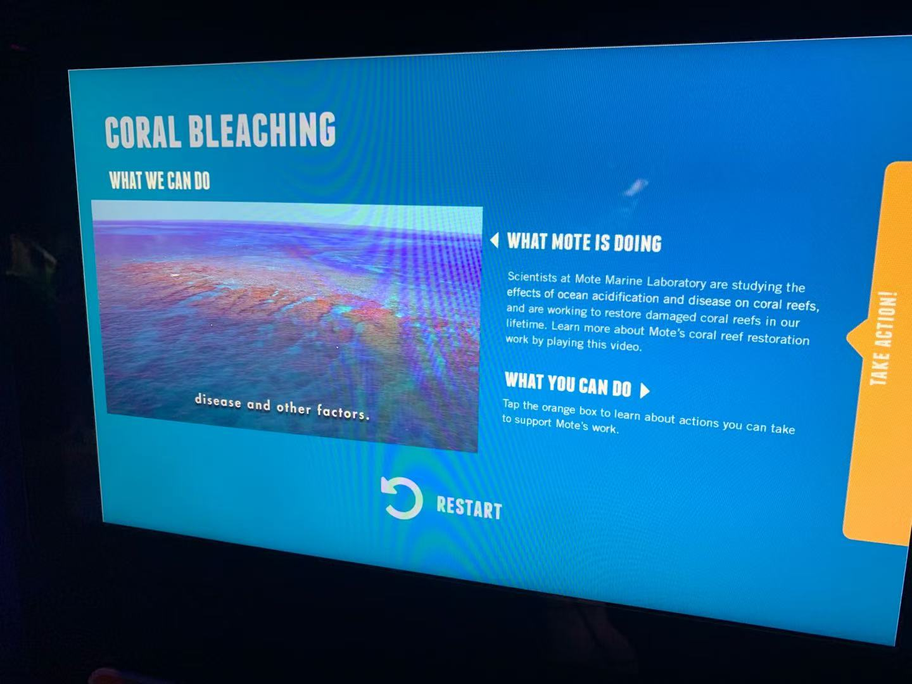
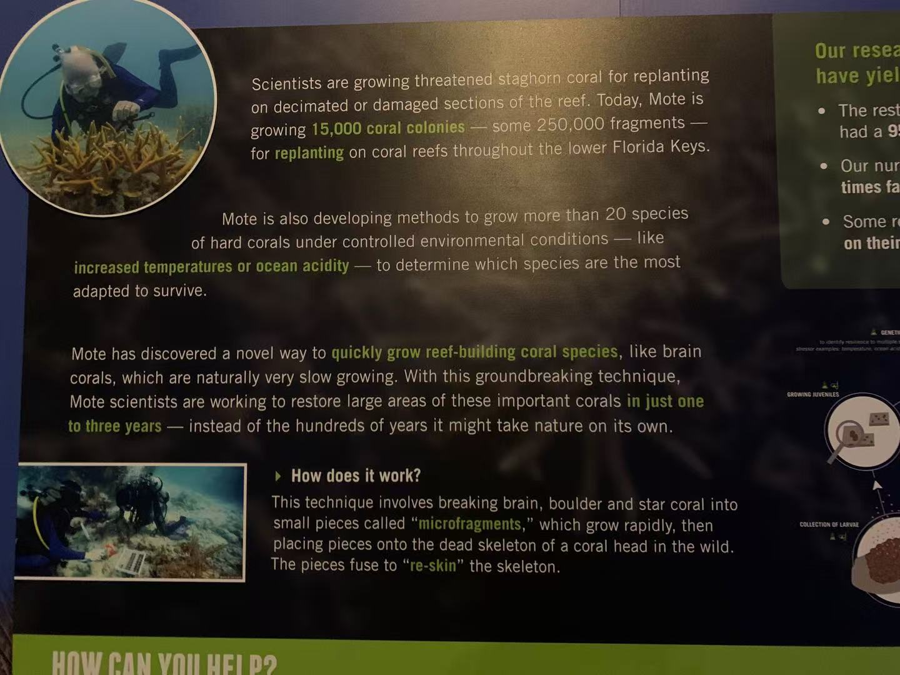
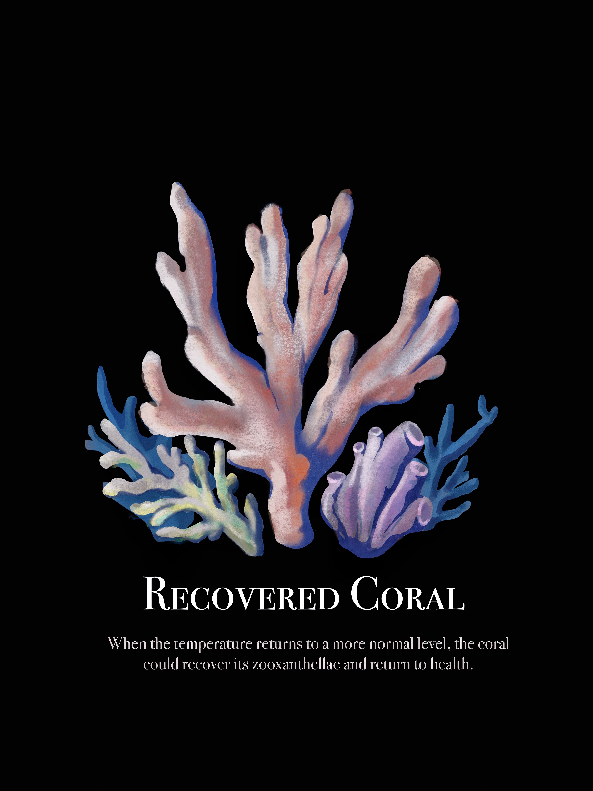

Three stages of a coral's life
This poster series was created for a marine awareness project focused on coral bleaching. Rather than presenting scientific findings directly, our team chose to tell the story through a simple visual narrative: death, recovery, and health. By translating environmental research into imagery, we aimed to make the impact of ocean stress on coral ecosystems more accessible to a general audience.
Each of us illustrated one stage, painted in the same style against a shared black background so the three read as one cohesive set. I illustrated the middle poster — "Recovered Coral" — the turning point where color and life begin to return.
Letting color carry the message
The concept was simple but deliberate: against a black background, the only variable is color. A bleached coral reads as ghostly white, a healthy one bursts with pinks, purples, and corals — so the viewer understands the stakes of bleaching instantly, without needing to read a word. We painted the corals in a soft, watercolor-like style to keep them feeling alive and organic rather than clinical.
"On a black field, color does all the talking — from a white skeleton back to something alive."
— Design intentFrom real reefs to painted ones
Before painting, our team gathered real reference — photographs and research on coral structure, color, and the bleaching process. Grounding the illustrations in real observation kept the final posters scientifically honest while still being beautiful.


One sequence, three hands


Like this kind of work?
Whether through illustration, visual design, or research-informed storytelling, I'm always interested in projects that help people understand, connect, and care. Feel free to reach out and start a conversation.
Get in touch ↗ ← Back to portfolio